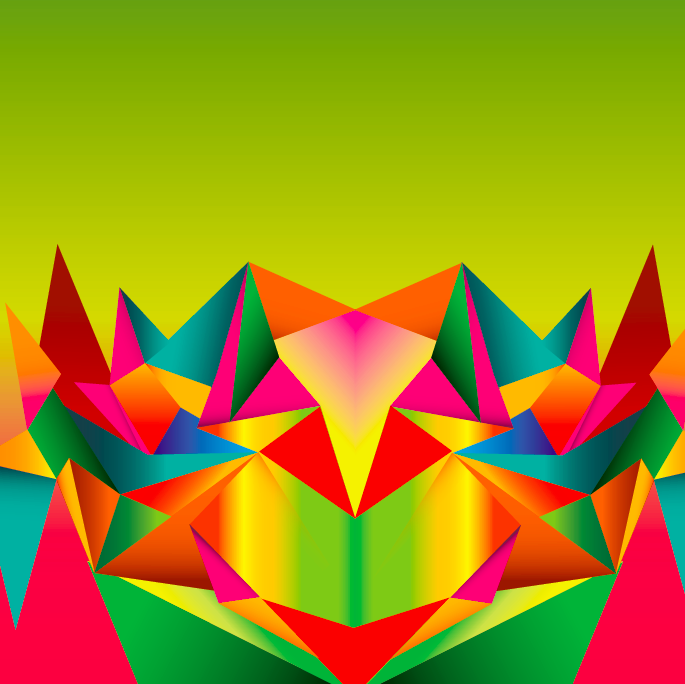
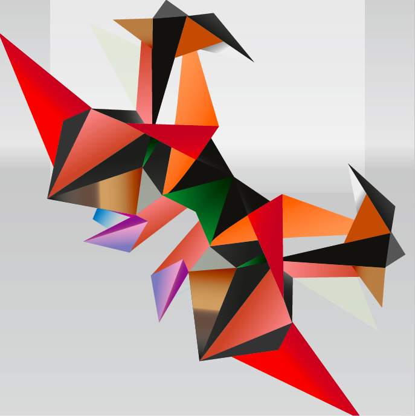
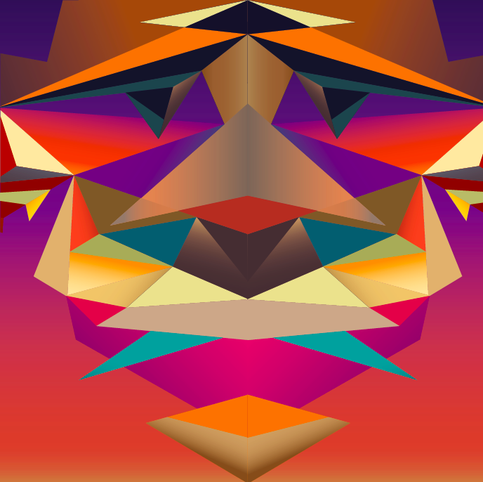
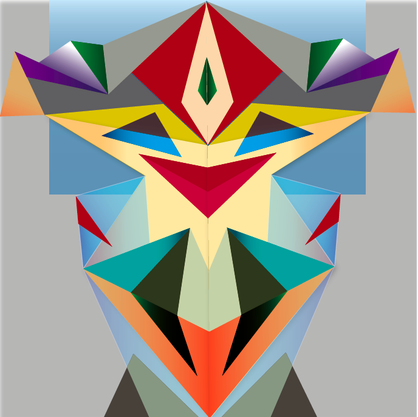

Kultur Kocht!
Unser Auftrag war, für das Restaurant im Kultur und Begegnungszentrum Union Bilder zu gestalten, für die Veranstaltungsreihe KULTUR KOCHT! Um den kulinarischen Themenabende zu bewerben. Wir durften eine Serie von abstrakten Illustrationen, zu vier der Folgenden Themen gestalten (diese vier waren meine Auswahl) 1. Orientalische Küche - kulinarische Reise in die Welt von 1001 Nacht 2. Fiesta Mexicana - bunt, scharf und lebensfroh 3. Japanische Gerichte - ästhetisch, gesund und bekömmlich 4. Russischer Abend - mit Kohlsuppe, Kaviar und viel Wodka Ich habe mich für diesen vier Themen entschieden, weil ich mit allen einen guten Zusammenhang habe. Mir gefallen von der Mexikanische Kultur die Farben und das Lebensfrohe. Die Japanische Küche habe ich gerne und das Orientalische und Russische habe ich auch ein wenig als Herausforderung der Farben aus gewählt. Der Farbklang unserer Illustrationen sollte die Stimmung des Themas widerspiegeln und die Farbklänge sollten sich klar von einander unterscheiden.
   